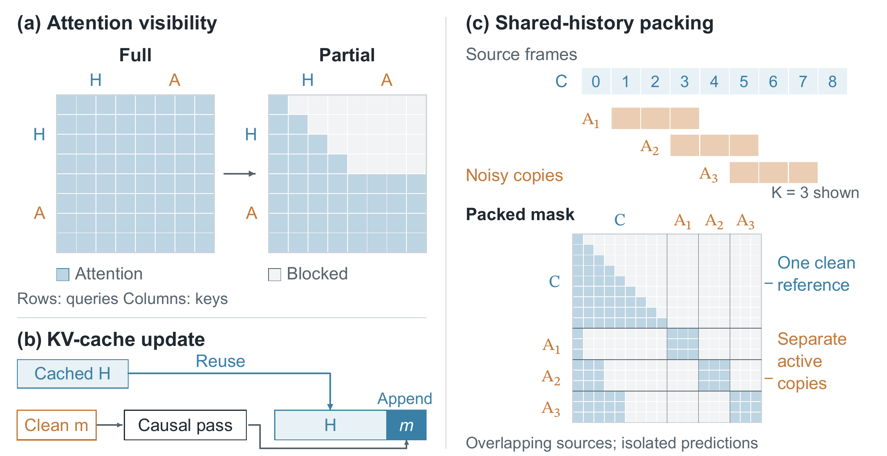
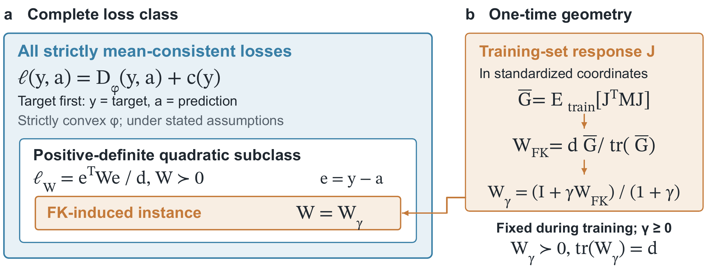
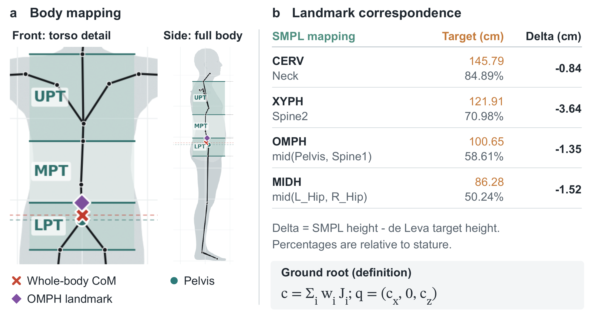

Walking
6 sA person walks forward.
Streaming motion generation
Efficient and Path Controllable
Streaming Motion Generation
FloodDiffusion 2 generates continuous human motion from changing text prompts and specified paths. Building on FloodDiffusion, it addresses efficiency and controllability through three advances: Partial Attention enables KV-cached inference and shared-history training; a Bregman criterion for diffusion-compatible losses guides an FK-induced quadratic objective; and root-path conditioning controls the trajectory while preserving natural body motion.
No path input
A person walks forward.
A person waves with both hands.
A person kicks forward with the right leg.
A person jumps up and down.
A person bends down and picks something up from the floor.
A person squats down and stands up.
A person walks in a crouched position.
A person dances.
Prompt timeline Click to jump
Prompt timeline Click to jump
Prompt timeline Click to jump
Prompt timeline Click to jump
Prompt timeline Click to jump
Prompt timeline Click to jump
Text + path control
A person walks forward.
A person jogs forward.
A person runs forward.
A person walks forward.
A person walks forward.
Prompt timeline Click to jump
Prompt timeline Click to jump
Prompt timeline Click to jump
Finalized history is independent of the active denoising window. Its keys and values can be cached during inference, while one history encoding is shared across multiple windows during training.


A necessary-and-sufficient criterion characterizes losses that preserve diffusion’s conditional-mean velocity field. It guides an FK-induced quadratic loss that incorporates motion geometry without online FK evaluation.

A frame-aligned trajectory controls where the character moves while text controls the action. The SEED representation separates the ground-projected center of mass from root-relative pelvis motion.
@misc{cai2026flooddiffusion2,
title = {FloodDiffusion 2: Efficient and Path Controllable Streaming Motion Generation},
author = {Yiyi Cai and Yuhan Wu and Kunhang Li and Tu Fangyuan and
Xiangyue Zhang and Qiaoge Li and Zhixiang Wang and
Kaipeng Zhang and Haiyang Liu},
year = {2026},
url = {https://caiyy17.github.io/FloodDiffusion2/}
}